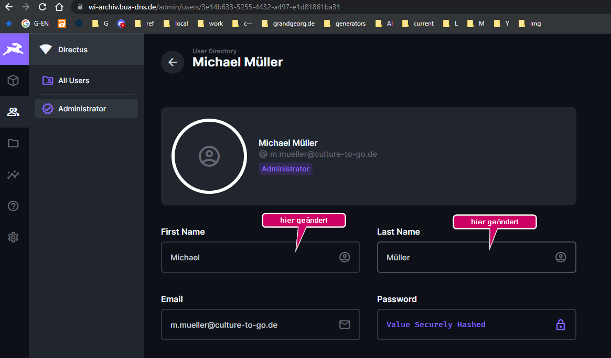
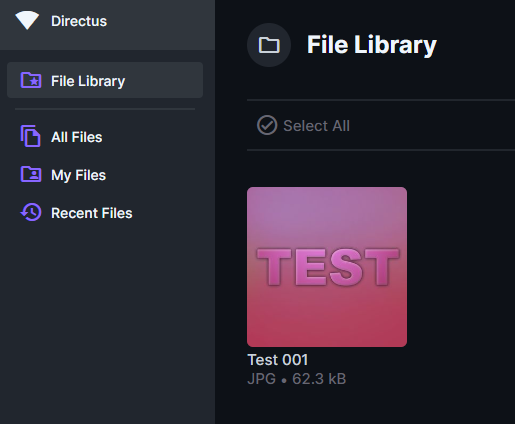
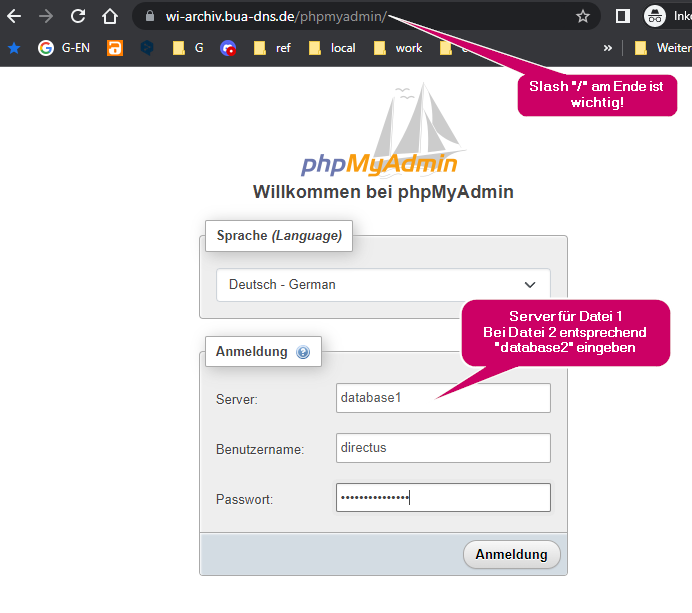
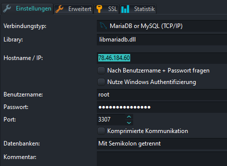

Docker Multi-Instanz Setup
Directus & MariaDB
Dateistruktur auf Server
🖿 /etc/apache2/
┊
├🗁 sites-available
│ ├🗏 helbing-db.bua-dns.de.conf
│ └🗏 wi-archiv.bua-dns.de.conf
┊
┊
🖿 /var/www/
┊
├🗁 helbing-db.bua-dns.de
│ ├🗁 data
│ │ ├🗁 database
│ │ ├🗁 extensions
│ │ └🗁 uploads
│ └🗏 docker-compose.yml
┊
├🗁 wi-archiv.bua-dns.de
│ ├🗁 data
│ │ ├🗁 database
│ │ ├🗁 extensions
│ │ └🗁 uploads
┊ └🗏 docker-compose.yml
🐳 Bsp. Container 1
- Domain: wi-archiv.bua-dns.de
- Docker-Compose Datei:
/var/www/wi-archiv.bua-dns.de/docker-compose.yml - Apache-Virtualhost-Config Datei:
/etc/apache2/wi-archiv.bua-dns.de.conf
Docker-Compose Datei
docker-compose.yml
Hier wird davon ausgegangen, dass die Domain wi-archiv.bua-dns.de auf die IP-Adresse des Servers zeigt.
Die YML-Datei ist für Docker Compose V2 geschrieben - für eine Migration zu Compose V2 siehe Migrate to Compose V2.
Bitte beachten, dass in V2 Service-Container Namen mit Bindestrichen als Trennzeichen und nicht mit Unterstrichen geschrieben werden.
Unter anderem werden die Container-Namen auch als Hostnamen verwendet. In Hostnamen sind Bindestriche erlaubt, Unterstriche jedoch nicht.
(The use of underscores in hostnames violates RFC 1123’s valid defined characters for a domain name.)
services:
directus-db-1:
container_name: directus-db-1
image: mariadb:latest
restart: unless-stopped
ports:
- 3307:3306
volumes:
- directus-db-vol-1:/var/lib/mysql
networks:
- directus-network-1
environment:
MARIADB_ROOT_PASSWORD: GEHEIM
MARIADB_USER: directus
MARIADB_PASSWORD: GEHEIM
MARIADB_DATABASE: directus
directus-pma-1:
container_name: directus-pma-1
image: phpmyadmin
restart: unless-stopped
ports:
- 8081:80
environment:
- PMA_ARBITRARY=1
- PMA_HOST=directus-db-1
- PMA_PORT=3306
# - PMA_ABSOLUTE_URI=https://wi-archiv.bua-dns.de/phpmyadmin/
networks:
- directus-network-1
directus-cache-1:
container_name: directus-cache-1
image: redis:latest
restart: unless-stopped
networks:
- directus-network-1
command: redis-server --save 60 1 --loglevel warning --requirepass GEHEIM
directus-1:
container_name: directus-1
image: directus/directus:latest
restart: unless-stopped
ports:
- 8055:8055
volumes:
- ./data/uploads:/directus/uploads
- ./data/extensions:/directus/extensions
networks:
- directus-network-1
depends_on:
- directus-cache-1
- directus-db-1
environment:
KEY: "88888888-4444-4444-4444-121212121212"
SECRET: "88888888-4444-4444-4444-121212121212"
# generate with e.g.
# openssl rand -hex 16 | sed 's/^\(.\{8\}\)\(.\{4\}\)\(.\{4\}\)\(.\{4\}\)/\1-\2-\3-\4-/'
DB_CLIENT: "mysql"
DB_HOST: "directus-db-1"
DB_PORT: "3306"
DB_DATABASE: "directus"
DB_USER: "directus"
DB_PASSWORD: "GEHEIM"
CACHE_ENABLED: true
CACHE_STORE: "redis"
REDIS_HOST: "directus-cache-1"
REDIS_PORT: 6379
REDIS_PASSWORD: "GEHEIM"
ADMIN_EMAIL: "your@email.here"
ADMIN_PASSWORD: "GEHEIM"
CORS_ENABLED: true
CORS_ORIGIN: "*"
ACCESS_TOKEN_TTL: "20160m" # 14 days
# Make sure to set this in production
# (see https://docs.directus.io/self-hosted/config-options/#general)
# PUBLIC_URL: "https://wi-archiv.bua-dns.de"
networks:
directus-network-1:
volumes:
directus-db-vol-1:
In den oben markierten Zeilen jeweils die Domain, den Container-Namen, die Portnummer, das Netzwerk und das Volume anpassen.
Wenn Redis als Cache-Store verwendet werden soll, muss auf dem Host unter /etc/sysctl.conf (oder in einer neuen Datei unter /etc/sysctl.d) der Wert vm.overcommit_memory=1 gesetzt werden.
Anschließend muss der Kernel neu geladen werden: sysctl -p, oder der Server neu gestartet werden, oder das Kommando sysctl vm.overcommit_memory=1 ausgeführt werden.
Container starten
cd /var/www/wi-archiv.bua-dns.de
docker-compose up -d
Apache-Virtualhost-Config Datei
wi-archiv.bua-dns.de.conf
<VirtualHost *:80>
ServerAdmin webmaster@localhost
ServerName wi-archiv.bua-dns.de
# ServerAlias www.wi-archiv.bua-dns.de
Redirect permanent / https://wi-archiv.bua-dns.de/
DocumentRoot /var/www/html
ErrorLog ${APACHE_LOG_DIR}/wi-archiv_bua-dns_error.log
CustomLog ${APACHE_LOG_DIR}/wi-archiv_bua-dns_access.log combined
</VirtualHost>
<IfModule mod_ssl.c>
<VirtualHost *:443>
ServerAdmin webmaster@localhost
ServerName wi-archiv.bua-dns.de
DocumentRoot /var/www/html
SSLEngine on
SSLProtocol All -SSLv2 -SSLv3 -TLSv1 -TLSv1.1
SSLCipherSuite ECDHE-ECDSA-AES128-GCM-SHA256:ECDHE-ECDSA-AES256-GCM-SHA384:ECDHE-ECDSA-AES128-SHA:ECDHE-ECDSA-AES256-SHA:ECDHE-ECDSA-AES128-SHA256:ECDHE-ECDSA-AES256-SHA384:ECDHE-RSA-AES128-GCM-SHA256:ECDHE-RSA-AES256-GCM-SHA384:ECDHE-RSA-AES128-SHA:ECDHE-RSA-AES256-SHA:ECDHE-RSA-AES128-SHA256:ECDHE-RSA-AES256-SHA384:DHE-RSA-AES128-GCM-SHA256:DHE-RSA-AES256-GCM-SHA384:DHE-RSA-AES128-SHA:DHE-RSA-AES256-SHA:DHE-RSA-AES128-SHA256:DHE-RSA-AES256-SHA256
SSLHonorCipherOrder on
SSLOptions +StrictRequire
Header always set Strict-Transport-Security "max-age=31536000; includeSubDomains; preload"
# Header set Access-Control-Allow-Origin "*"
SSLCertificateKeyFile /etc/letsencrypt/live/wi-archiv.bua-dns.de/privkey.pem
SSLCertificateFile /etc/letsencrypt/live/wi-archiv.bua-dns.de/fullchain.pem
Protocols h2 http/1.1
# Proxy forwarding
ProxyPass /.well-known/acme-challenge !
ProxyPass /phpmyadmin/ http://localhost:8080/
ProxyPassReverse /phpmyadmin/ http://localhost:8080/
ProxyPass / http://localhost:8055/
ProxyPassReverse / http://localhost:8055/
ErrorLog ${APACHE_LOG_DIR}/wi-archiv_bua-dns_error.log
CustomLog ${APACHE_LOG_DIR}/wi-archiv_bua-dns_access.log combined
<FilesMatch "\.(phtml|php)$">
SSLOptions +StdEnvVars
</FilesMatch>
</VirtualHost>
</IfModule>
In den oben markierten Zeilen jeweils die Domain, und die Portnummer anpassen.
Bugfix 🐞
Berechtigungen des directus docker services
Zunächst prüfen, ob der Bugfix notwendig ist!
Der directus container directus-1 muss laufen, überprüfen mit:
docker ps
CONTAINER ID IMAGE COMMAND CREATED STATUS PORTS
a8fcf79b0ab2 directus/directus:latest "docker-entrypoint.s…" 2 weeks ago Up 2 weeks 0.0.0.0:8055->8055/tcp, :::8055->8055/tcp directus1
9da68cd42fa8 mariadb:latest "docker-entrypoint.s…" 2 weeks ago Up 2 weeks 0.0.0.0:3307->3306/tcp, :::3307->3306/tcp database1
65c03b70840a phpmyadmin "/docker-entrypoint.…" 2 weeks ago Up 2 weeks 0.0.0.0:8080->80/tcp, :::8080->80/tcp phpmyadmin1
31e3b4950ba9 redis:latest "docker-entrypoint.s…" 2 weeks ago Up 2 weeks 6379/tcp cache1
Dann für den Bugfix eingeben:
cd /var/www/wi-archiv.bua-dns.de
docker-compose exec -u root directus-1 chown -R node:node /directus/database /directus/extensions /directus/uploads
docker-compose restart
Endpunkte
- Directus Admin-UI: https://wi-archiv.bua-dns.de/
- PhpMyAdmin: https://wi-archiv.bua-dns.de/phpmyadmin/
- Verbindung zur DB über lokalen SQL-Client (Bsp. HeidiSQL)
- Hostname / IP: 78.46.184.60
- Benutzer: root
- Port: 3307
🧪 Directus Test
Test: Anmeldung Directus, phpMyAdmin und MariaDB
Angemeldet und als Test “First Name” und “Last Name” geändert (Standardmäßig ist nur bei First Name “Admin” gesetzt).

Testbild hochgeladen

phpMyAdmin

lokler SQL Client (HeidiSQL)

🐳 Bsp. Container 2
- Domain: helbing-db.bua-dns.de
- Docker-Compose Datei:
/var/www/helbing-db.bua-dns.de/docker-compose.yml - Apache-Virtualhost-Config Datei:
/etc/apache2/helbing-db.bua-dns.de.conf
Docker-Compose Datei
docker-compose.yml
services:
directus-db-2:
container_name: directus-db-2
image: mariadb:latest
restart: unless-stopped
ports:
- 3307:3306
volumes:
- directus-db-vol-2:/var/lib/mysql
networks:
- directus-network-2
environment:
MARIADB_ROOT_PASSWORD: GEHEIM
MARIADB_USER: directus
MARIADB_PASSWORD: GEHEIM
MARIADB_DATABASE: directus
directus-pma-2:
container_name: directus-pma-2
image: phpmyadmin
restart: unless-stopped
ports:
- 8081:80
environment:
- PMA_ARBITRARY=1
- PMA_HOST=directus-db-2
- PMA_PORT=3306
# - PMA_ABSOLUTE_URI=https://helbing-db.bua-dns.de/phpmyadmin/
networks:
- directus-network-2
directus-cache-2:
container_name: directus-cache-2
image: redis:latest
restart: unless-stopped
networks:
- directus-network-2
command: redis-server --save 60 1 --loglevel warning --requirepass GEHEIM
directus-2:
container_name: directus-2
image: directus/directus:latest
restart: unless-stopped
ports:
- 8055:8055
volumes:
- ./data/uploads:/directus/uploads
- ./data/extensions:/directus/extensions
networks:
- directus-network-2
depends_on:
- directus-cache-2
- directus-db-2
environment:
KEY: "88888888-4444-4444-4444-121212121212"
SECRET: "88888888-4444-4444-4444-121212121212"
# generate with e.g.
# openssl rand -hex 16 | sed 's/^\(.\{8\}\)\(.\{4\}\)\(.\{4\}\)\(.\{4\}\)/\1-\2-\3-\4-/'
DB_CLIENT: "mysql"
DB_HOST: "directus-db-2"
DB_PORT: "3306"
DB_DATABASE: "directus"
DB_USER: "directus"
DB_PASSWORD: "GEHEIM"
CACHE_ENABLED: true
CACHE_STORE: "redis"
REDIS_HOST: "directus-cache-2"
REDIS_PORT: 6379
REDIS_PASSWORD: "GEHEIM"
ADMIN_EMAIL: "your@email.here"
ADMIN_PASSWORD: "GEHEIM"
CORS_ENABLED: true
CORS_ORIGIN: "*"
ACCESS_TOKEN_TTL: "20160m" # 14 days
# Make sure to set this in production
# (see https://docs.directus.io/self-hosted/config-options/#general)
# PUBLIC_URL: "https://helbing-db.bua-dns.de"
networks:
directus-network-2:
volumes:
directus-db-vol-2:
In den oben markierten Zeilen jeweils die Domain, den Container-Namen, die Portnummer und das Netzwerk anpassen.
Container starten
cd /var/www/helbing-db.bua-dns.de
docker-compose up -d
Apache-Virtualhost-Config Datei
helbing-db.bua-dns.de.conf
<VirtualHost *:80>
ServerAdmin webmaster@localhost
ServerName helbing-db.bua-dns.de
# ServerAlias www.helbing-db.bua-dns.de
Redirect permanent / https://helbing-db.bua-dns.de/
DocumentRoot /var/www/html
ErrorLog ${APACHE_LOG_DIR}/helbing-db_bua-dns_error.log
CustomLog ${APACHE_LOG_DIR}/helbing-db_bua-dns_access.log combined
</VirtualHost>
<IfModule mod_ssl.c>
<VirtualHost *:443>
ServerAdmin webmaster@localhost
ServerName helbing-db.bua-dns.de
DocumentRoot /var/www/html
SSLEngine on
SSLProtocol All -SSLv2 -SSLv3 -TLSv1 -TLSv1.1
SSLCipherSuite ECDHE-ECDSA-AES128-GCM-SHA256:ECDHE-ECDSA-AES256-GCM-SHA384:ECDHE-ECDSA-AES128-SHA:ECDHE-ECDSA-AES256-SHA:ECDHE-ECDSA-AES128-SHA256:ECDHE-ECDSA-AES256-SHA384:ECDHE-RSA-AES128-GCM-SHA256:ECDHE-RSA-AES256-GCM-SHA384:ECDHE-RSA-AES128-SHA:ECDHE-RSA-AES256-SHA:ECDHE-RSA-AES128-SHA256:ECDHE-RSA-AES256-SHA384:DHE-RSA-AES128-GCM-SHA256:DHE-RSA-AES256-GCM-SHA384:DHE-RSA-AES128-SHA:DHE-RSA-AES256-SHA:DHE-RSA-AES128-SHA256:DHE-RSA-AES256-SHA256
SSLHonorCipherOrder on
SSLOptions +StrictRequire
Header always set Strict-Transport-Security "max-age=31536000; includeSubDomains; preload"
# Header set Access-Control-Allow-Origin "*"
SSLCertificateKeyFile /etc/letsencrypt/live/helbing-db.bua-dns.de/privkey.pem
SSLCertificateFile /etc/letsencrypt/live/helbing-db.bua-dns.de/fullchain.pem
Protocols h2 http/1.1
# Proxy forwarding
ProxyPass /.well-known/acme-challenge !
ProxyPass /phpmyadmin/ http://localhost:8081/
ProxyPassReverse /phpmyadmin/ http://localhost:8081/
ProxyPass / http://localhost:8056/
ProxyPassReverse / http://localhost:8056/
ErrorLog ${APACHE_LOG_DIR}/helbing-db_bua-dns_error.log
CustomLog ${APACHE_LOG_DIR}/helbing-db_bua-dns__access.log combined
<FilesMatch "\.(phtml|php)$">
SSLOptions +StdEnvVars
</FilesMatch>
</VirtualHost>
</IfModule>
In den oben markierten Zeilen jeweils die Domain, und die Portnummer anpassen.
Bugfix 🐞
Berechtigungen des directus docker services
Der directus container directus2 muss laufen, überprüfen mit:
docker ps
CONTAINER ID IMAGE COMMAND CREATED STATUS PORTS
e6af8f15f42f directus/directus:latest "docker-entrypoint.s…" 2 weeks ago Up 2 weeks 0.0.0.0:8056->8055/tcp, :::8056->8055/tcp directus2
de6793d2190b mariadb:latest "docker-entrypoint.s…" 2 weeks ago Up 2 weeks 0.0.0.0:3308->3306/tcp, :::3308->3306/tcp database2
81e89e224cb7 redis:latest "docker-entrypoint.s…" 2 weeks ago Up 2 weeks 6379/tcp cache2
1b7b26568b2b phpmyadmin "/docker-entrypoint.…" 2 weeks ago Up 2 weeks 0.0.0.0:8081->80/tcp, :::8081->80/tcp phpmyadmin2
Dann eingeben:
cd /var/www/helbing-db.bua-dns.de
docker-compose exec -u root directus2 chown -R node:node /directus/database /directus/extensions /directus/uploads
docker-compose restart
Endpunkte
- Directus Admin-UI: https://helbing-db.bua-dns.de/
- PhpMyAdmin: https://helbing-db.bua-dns.de/phpmyadmin/
- Verbindung zur DB über lokalen SQL-Client
- Hostname / IP: 78.46.184.60
- Benutzer: root
- Port: 3308
Datenbank Backup
📦 Backup-Skript erstellen
Skript erstellen unter z.B.: /mnt/volume-fsn1-1/backup/backup-docker-db.sh
#!/usr/bin/env bash
CURRENTDATE=$(date +"%Y-%m-%d_%H-%M-%S")
GZIP="$(which gzip)"
BACKUPDIR="/mnt/volume-fsn1-1/backup/db"
DAYS_TO_KEEP=7
CONTAINERS=$(docker ps --format '{{.Names}}:{{.Image}}' | grep 'database' | cut -d":" -f1)
for CONTAINER in $CONTAINERS
do
MARIADB_ROOT_PASSWORD=$(docker exec $CONTAINER env | grep MARIADB_ROOT_PASSWORD | cut -d"=" -f2)
DATABASE=$(docker exec $CONTAINER env | grep MARIADB_DATABASE | cut -d"=" -f2)
docker exec $CONTAINER /usr/bin/mariadb-dump --user=root --password=$MARIADB_ROOT_PASSWORD $DATABASE | $GZIP > $BACKUPDIR/$CONTAINER-$CURRENTDATE.sql.gz
done
find $BACKUPDIR -type f -name "*.gz" -mtime +$DAYS_TO_KEEP -delete;
Backup-Verzeichnis erstellen:
mkdir -p /mnt/volume-fsn1-1/backup/db
Skript in crontab eintragen
ln -s /mnt/volume-fsn1-1/backup/backup-docker-db.sh /etc/cron.daily/backup-docker-db